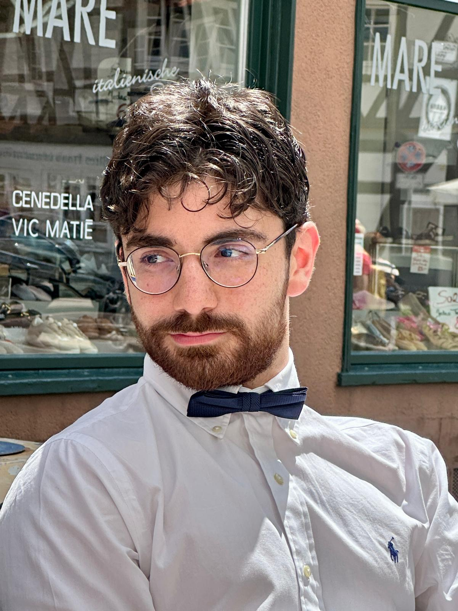

B.Sc. Student in Electrical Engineering & Information Technology
RWTH Aachen University
I am interested in performance modeling and optimization of parallel computing systems, particularly at the intersection of hardware behavior and software scheduling on multi-device platforms. My embedded systems background has given me a foundation in low-level timing analysis, inter-processor synchronization, and memory hierarchy optimization — topics I want to explore further in the context of GPU and multi-GPU systems.
I am also broadly interested in embedded and real-time systems and hardware-software co-design.